Join Computer Society of India
Bennett University
Be part of something extraordinary.
Applications close in
Applications close on September 23rd, 2026
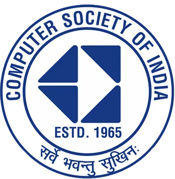
CSI BennettBe part of something extraordinary.
Established 2017 · School of Computer Science & Engineering
Computer Society of India (CSI), Bennett University is a student-led technical chapter promoting technology, innovation, research, and professional development. We create opportunities for students to learn beyond the classroom — strengthening both technical and soft skills while encouraging collaboration, creativity, and problem-solving.
🎓 Student-Led Since 2017
Where Ideas Turn Into Innovation
Hackaccino is one of Bennett University’s biggest hackathons, organized by the Computer Society of India (CSI), Bennett University. With 1,200+ participants and an intense 24-hour building experience, Hackaccino brings together developers, designers, innovators, and problem-solvers to transform ideas into technology-driven solutions for real-world challenges.
But Hackaccino is more than just a hackathon — it is a massive collaborative experience powered by an equally passionate organizing team.
Do you want to be part of the team that organizes one of the biggest hackathons Bennett University witnesses?
From planning and management to technology, design, outreach, sponsorships, and on-ground execution, the organizing team works behind the scenes to bring Hackaccino to life.
Join CSI and become a part of the team that plans, builds, and executes an experience for 1,200+ innovators over 24 hours.
Be a part of the team that makes it happen.
Think. Build. Innovate. Organize.
Glimpses of innovation in action
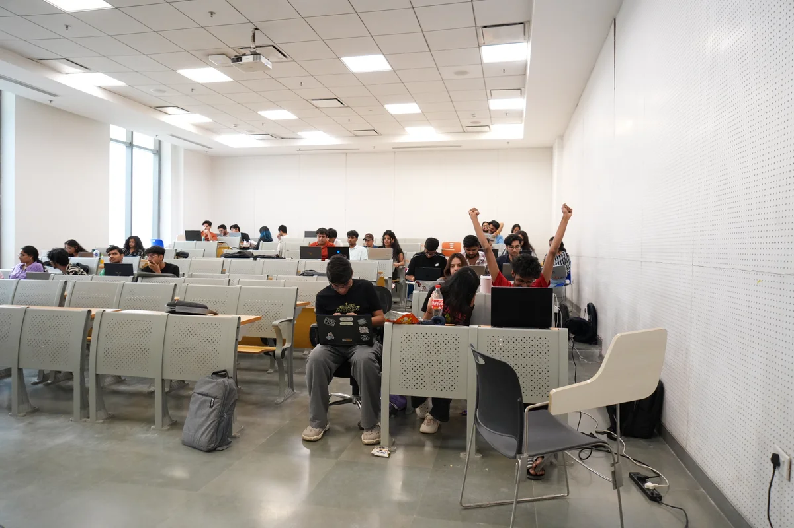
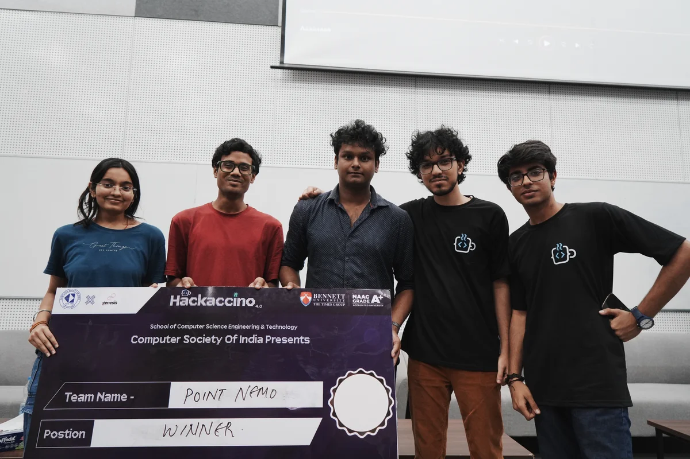
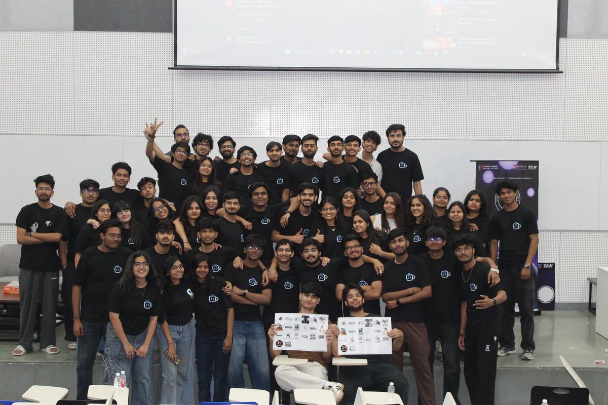
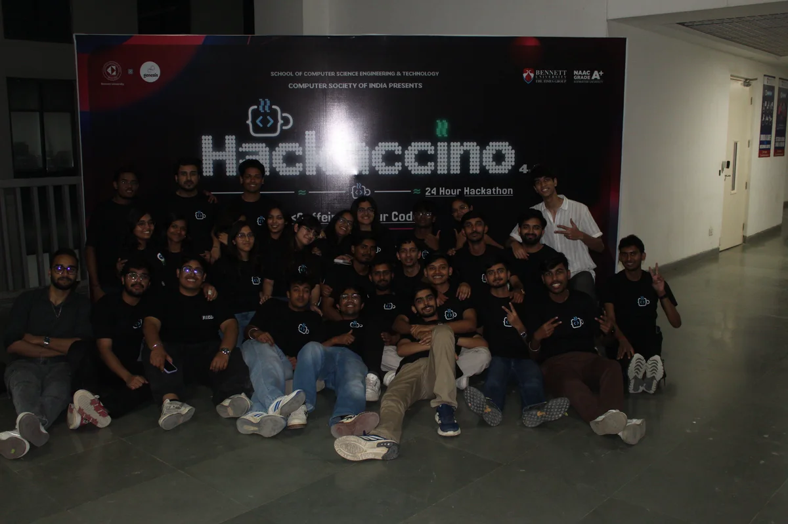
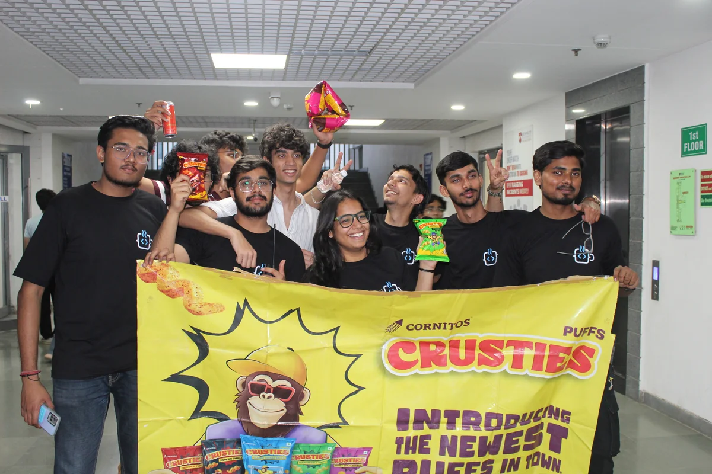
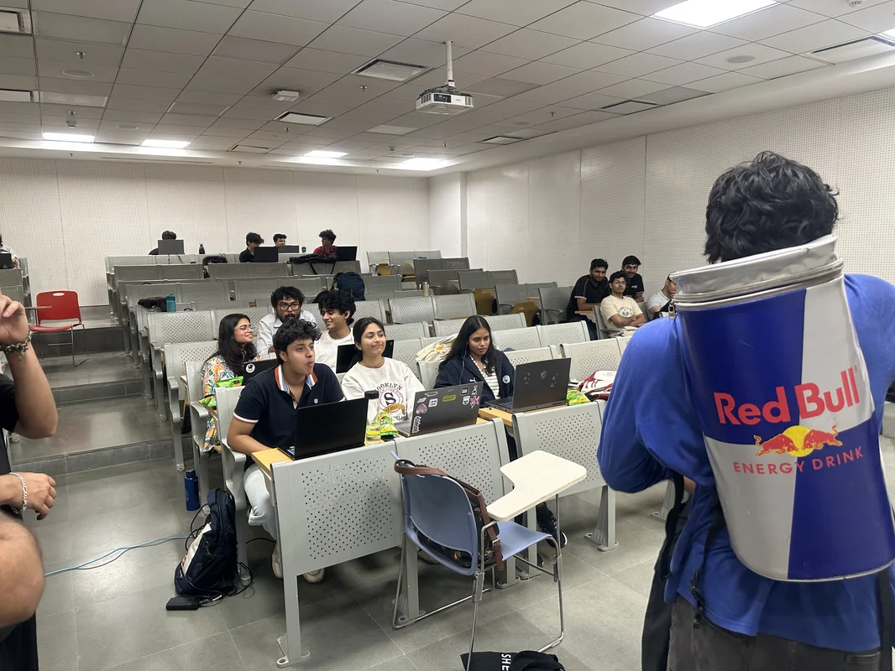
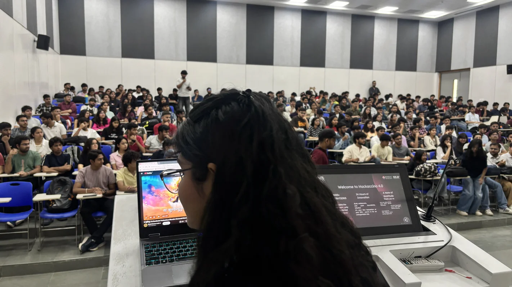
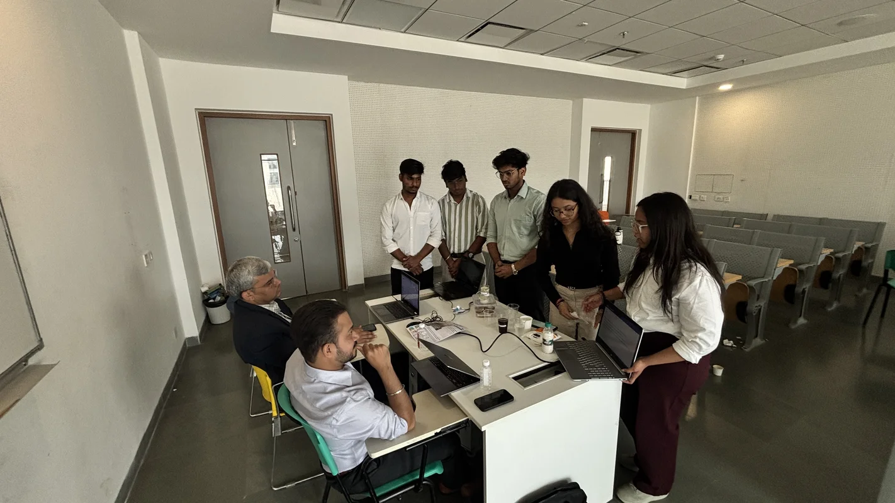
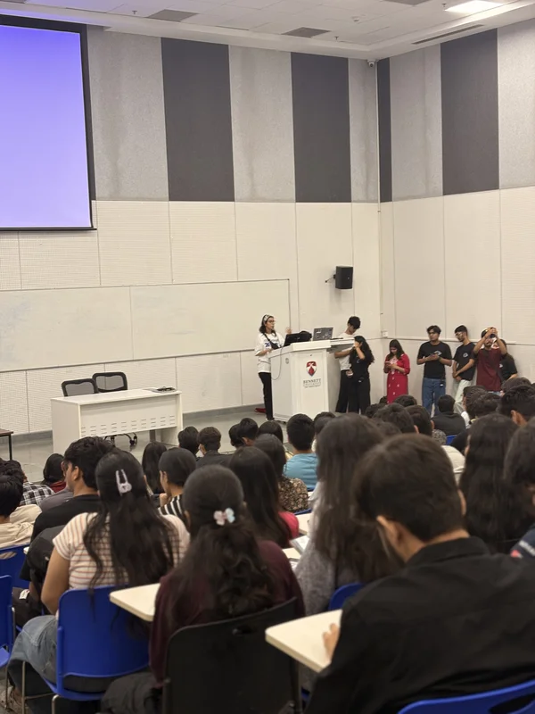
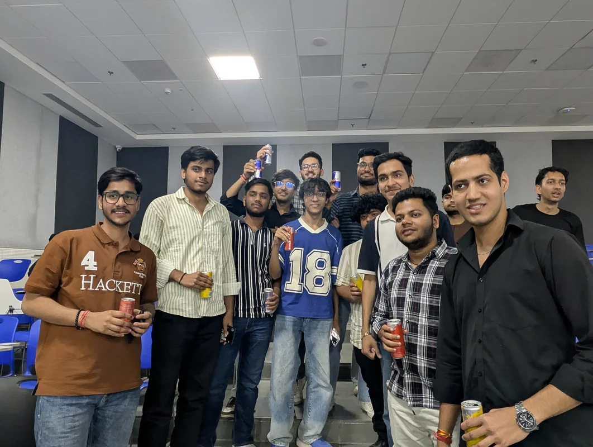
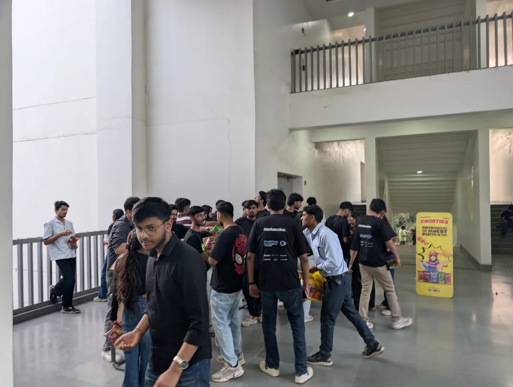
Relive the ultimate 24-hour building experience
Everything you need to know to join the team
CSI has eight departments, each contributing to different aspects of the organization's events, initiatives, and activities:
Students can choose a department based on their interests, skills, and the kind of experience they want to gain.
The Tech Department handles the technical requirements of CSI. Members work on websites, digital platforms, technical systems, development projects, and other technology-driven initiatives. The team also supports the technical requirements of major events and hackathons.
Suitable for: Students interested in programming, web development, software development, databases, and technology.
The PR & Outreach Department focuses on communication, networking, collaborations, and expanding CSI's reach. Members connect with students, organizations, speakers, communities, and potential collaborators while promoting CSI's events and initiatives.
Suitable for: Students who enjoy communication, networking, relationship building, and outreach.
The Management Department handles the planning and execution of CSI activities. Members coordinate teams, manage logistics, organize events, handle volunteers, maintain timelines, and ensure that activities run smoothly.
Suitable for: Students who are organized, responsible, good at coordination, and enjoy managing events.
The Content Department is responsible for CSI's written communication. Members create captions, announcements, event descriptions, scripts, emails, articles, promotional copy, and other written content.
Suitable for: Students interested in writing, storytelling, communication, social media, and creative thinking.
The Design Department focuses on the visual design and branding of CSI and its events. Members create posters, social media creatives, banners, presentations, event graphics, and other visual assets while maintaining a consistent visual identity.
Suitable for: Students interested in graphic design, Canva, Figma, Photoshop, branding, typography, and visual creativity.
The Multimedia Department focuses on visual storytelling through photography, videography, video editing, reels, event coverage, and other multimedia content. Members capture and document CSI's events and transform the footage into engaging digital content.
Suitable for: Students interested in photography, videography, video editing, filmmaking, reels, cinematography, and visual storytelling.
The Research Department explores emerging technologies, trends, ideas, and opportunities relevant to CSI. Members conduct research, gather information, analyze topics, and provide insights that can support CSI's events, initiatives, and technical activities.
Suitable for: Students who enjoy researching, analyzing information, learning new technologies, and exploring innovative ideas.
The Sponsorship Department works on building professional relationships with companies, startups, organizations, and potential sponsors. Members prepare sponsorship proposals, communicate with potential partners, pitch CSI initiatives, and work toward securing sponsorships and collaborations.
Suitable for: Students interested in business development, communication, pitching, negotiation, networking, and professional relationship building.
Design focuses on creating graphics and visual assets, while Multimedia focuses on capturing and producing dynamic visual content.
Design: Posters, banners, social media creatives, branding, presentations, typography, and graphic design.
Multimedia: Photography, videography, video editing, reels, event coverage, cinematography, and visual storytelling.
Both departments work closely together but have different responsibilities.
No. CSI has departments covering technology, communication, management, creativity, research, outreach, and business development. You can choose a department according to your interests and strengths. Programming skills are primarily relevant to the Tech Department.
CSI members can get opportunities to contribute to major initiatives such as Hackaccino, one of the biggest hackathons witnessed at Bennett University. The event brings together around 1,200 participants for a 24-hour hackathon, requiring collaboration between multiple CSI departments.
Different departments contribute in different ways — from technology and event management to PR, content, design, multimedia, research, and sponsorship.
Think about the type of work you enjoy:
Choose the department where you are most interested in learning, contributing, and developing your skills.
Connect With Us
Follow CSI Bennett across platforms